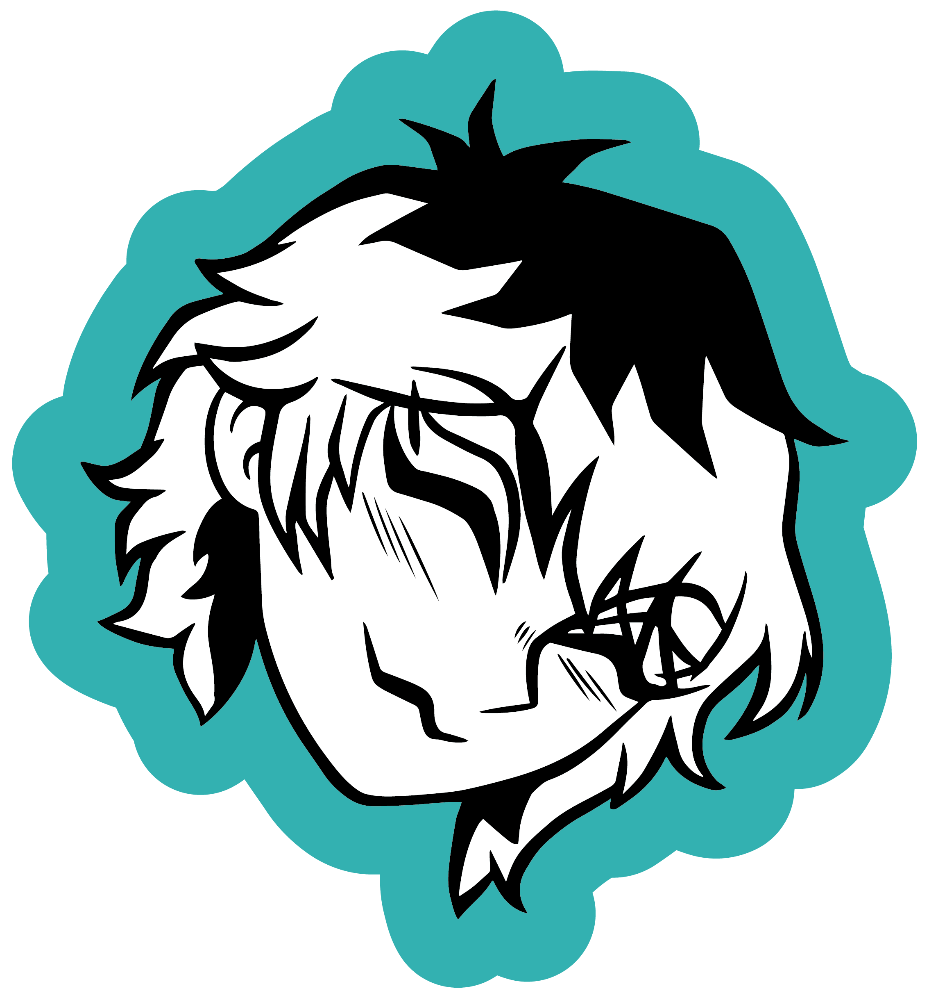
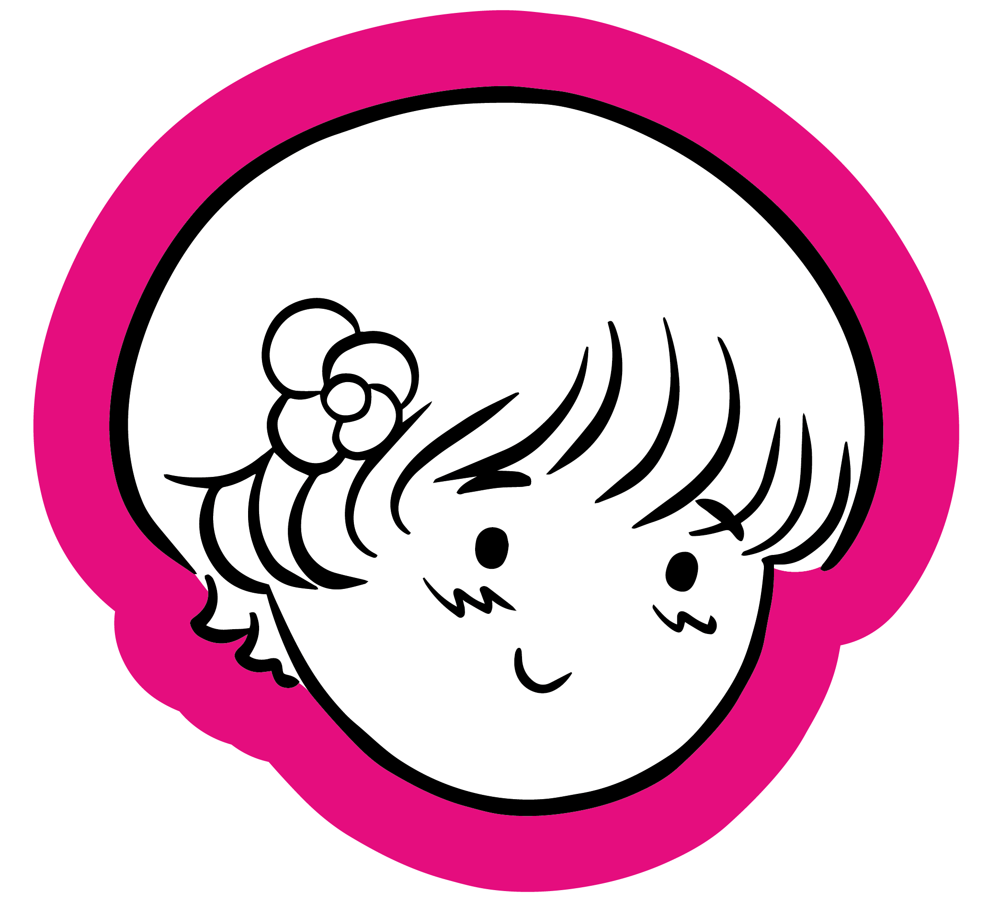
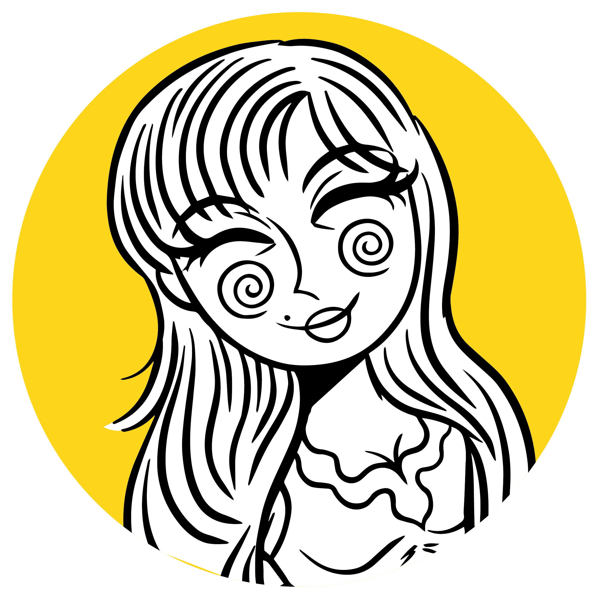
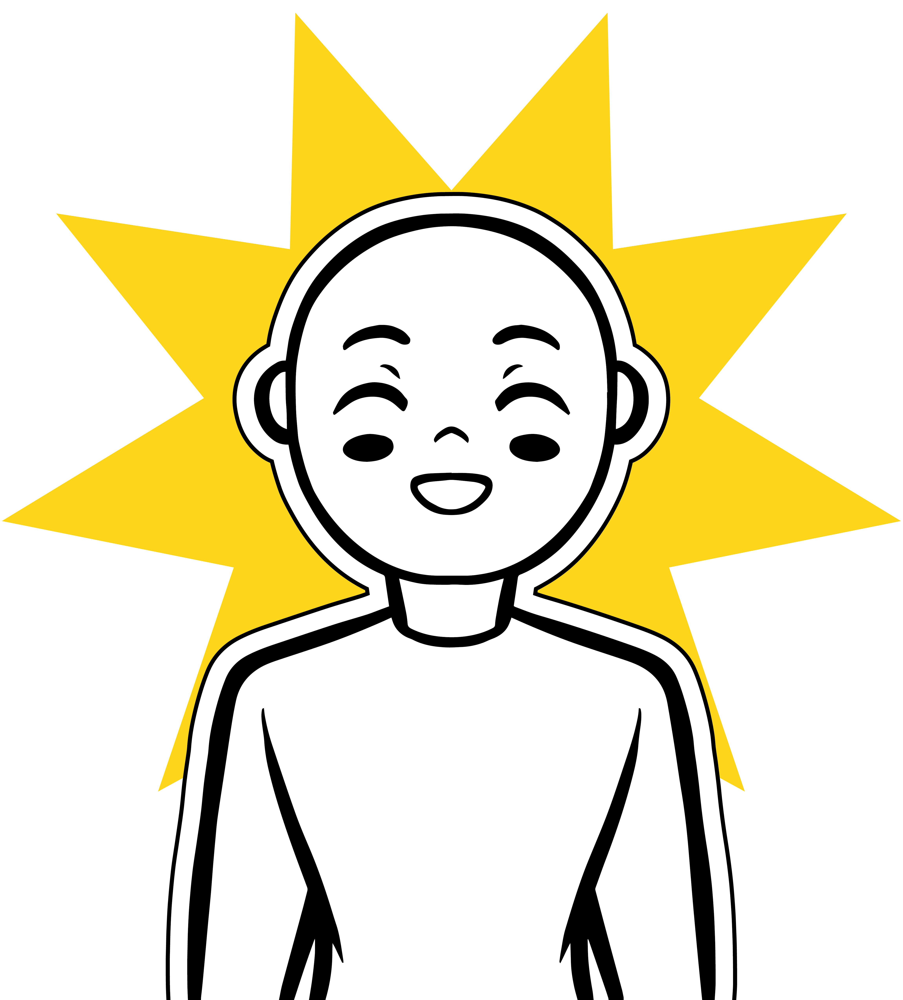

Y ahora lo bueno:
¿Cómo puedo crear
un concepto potente?
No existe una única forma de crear un concepto, ni hay una forma correcta de hacerlo.
Algunas personas parten de palabras, otras de experiencias, historias, emociones o referencias visuales. Lo importante es encontrar el método que mejor se adapte a tu forma de pensar y crear.
Explora distintas rutas y descubre cuál funciona mejor para ti.
Estas dos van de la mano
Lluvia de ideas
La cantidad primero, la selección después. Anota todas las ideas que surjan sin juzgarlas. Muchas veces los conceptos más interesantes aparecen después de las primeras respuestas obvias.
Mapa Mental
Conecta ideas para descubrir nuevas posibilidades. Parte de una palabra central y expande conceptos relacionados hasta encontrar patrones, conexiones o temas recurrentes.
El clásico más empleado:
Briefing de Marca
Empieza por entender el problema y para ello —así como para los demás métodos— se debe investigar a fondo.
Antes de crear, responde preguntas clave: quién eres, qué ofreces, para quién trabajas y qué te hace diferente.
Este método es muy utilizado en diseño.
Combinación de Palabras
No es un método per se, pero consiste en unir ideas diversas para generar conceptos.
Por ejemplo:
- Naturaleza + Ritual
- Fantasía + Comunidad
- Ciencia + Bienestar
Estas combinaciones ayudan a generar ideas más innovadoras y frescas.
Método nuevo experimental
Conceptos RICO
Método en desarrollo por el docente universitario Juan Pablo Aponte
Porque hasta los conceptos deben ser R.I.C.O.S, si cumple con cada letra: R (relevante), I (inspirador), C (claro) y O (original), entonces puede considerarse un buen concepto.
Ver el método RICO aquíOtros enfoques:
Semiótica y Arquetipos:
Descubre qué personalidad representa mejor tu marca y cómo puede conectar emocionalmente con las personas. Analiza los significados detrás de colores, símbolos, formas e imágenes para comunicar de manera más estratégica.
Explora estos métodos junto a Nico
Storytelling Sensorial y Experiencial
Construye conceptos a partir de emociones, recuerdos, sensaciones y experiencias memorables.
Explora estos métodos junto a Orión
Etnografía Visual, Collage y Moodboarding
Investiga referentes, imágenes, objetos y contextos para detectar patrones, inspiraciones y oportunidades conceptuales.
Explora estos métodos junto a Fer
